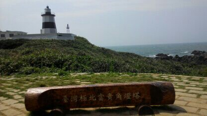
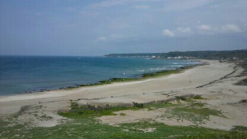
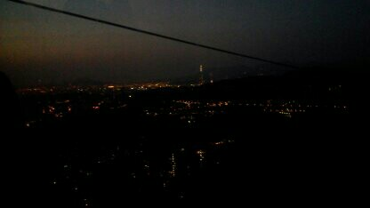
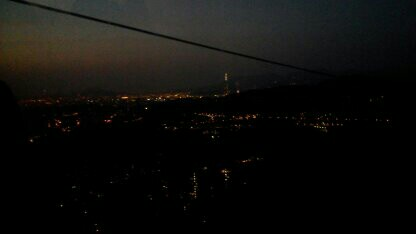
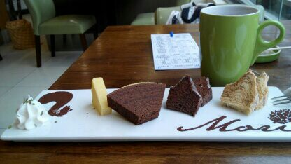
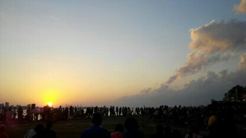

去過蠻多地方的，但都不同天。
先從富貴角開始好了。那天是個大熱天，而富貴角燈塔那個地方並沒有遮陽的地方，而且幾乎整趟都是站著前往的，距離並不是非常的近，所以這次旅程可說是特別累
 接下來是貓空。我和同學在傍晚的時候去搭纜車的，排隊人潮超多，我們搭的時候剛好可以看台北夜景，很美，特別的是那個時候和我們一起搭乘的是一對韓國來的母女檔，有過一兩句交談，覺得很奇特。
 

最後是淡水。那次去淡水看海順道去吃年輪蛋糕，聽說還不錯，所以就去了，人潮也是非常的多，畢竟是假日。
 